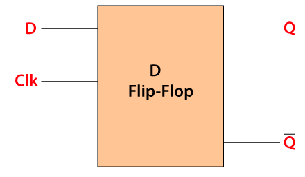

Boolean Expressions – Notes
Logic Gates, Symbols & Truth Tables
Boolean logic works with variables that can only be 0 (false) or 1 (true). We combine them using logic gates:
| Gate | Symbol | Expression | Meaning |
|---|---|---|---|
|
|
∧ | A ∧ B | True only if both inputs are 1. |
| ∨ | A ∨ B | True if at least one input is 1. | |
| |
∨ | A ∨ B | True if either input is 1 but not both. |
|
|
¬ | ¬A | Flips the value of A (0 → 1, 1 → 0). |
| Equivalence | ≡ | A ≡ B | True if A and B have the same truth value. |
|
|
¬(A ∧ B) | A NAND B | Opposite of AND – only 0 when both inputs are 1. |
Key truth tables
| AND (A ∧ B) | ||
|---|---|---|
| A | B | Output |
| 0 | 0 | 0 |
| 0 | 1 | 0 |
| 1 | 0 | 0 |
| 1 | 1 | 1 |
| OR (A ∨ B) | ||
|---|---|---|
| A | B | Output |
| 0 | 0 | 0 |
| 0 | 1 | 1 |
| 1 | 0 | 1 |
| 1 | 1 | 1 |
| NOT (¬A) | |
|---|---|
| A | Output |
| 0 | 1 |
| 1 | 0 |
| XOR (A V B) | ||
|---|---|---|
| A | B | Output |
| 0 | 0 | 0 |
| 0 | 1 | 1 |
| 1 | 0 | 1 |
| 1 | 1 | 0 |
| NAND (¬(A ∧ B)) | ||
|---|---|---|
| A | B | Output |
| 0 | 0 | 1 |
| 0 | 1 | 1 |
| 1 | 0 | 1 |
| 1 | 1 | 0 |
Difference between OR and XOR: OR is 1 when at least one input is 1; XOR is 1 only when exactly one input is 1 (not both).
From Logic Diagrams to Boolean Expressions
Multiple logic gates can be connected together to produce an output based on several inputs. The circuit on the KO (page 2) is represented by:
Q = ¬A ∨ (B ∧ C)
or, in words, Q is true if NOT A is true, or B AND C are both true. Evaluate the brackets first: ANDs inside, then OR / XOR outside.
Writing expressions from a diagram
- Identify each sub-gate:
- Top AND gate: (A ∧ B)
- Bottom AND gate: (B ∧ ¬C)
- These two outputs feed an OR gate, so the final expression is:
P = (A ∧ B) ∨ (B ∧ ¬C)
Always work from left to right and inside the circuit first, then combine the intermediate signals.
Defining Problems with Boolean Logic

We can model real situations using Boolean variables and logic.
Example 1 – Boiler safety
A boiler has a temperature sensor (T) and a pressure sensor (P). If either is too high, a valve (V) closes.
- Let T = 1 if temperature too high, 0 otherwise.
- Let P = 1 if pressure too high, 0 otherwise.
Then: V = T ∨ P – the valve closes if T or P is 1.
Example 2 – Chemical process alarm
A chemical process sounds an alarm (A) when a dangerous situation occurs:
- either temperature ≥ 100 °C AND rotator is OFF
- or PH > 6 AND temperature < 100 °C
Using Boolean values for each condition, the alarm expression becomes:
A = (T ∧ ¬R) ∨ (P ∧ ¬T)
Truth tables can then be completed to test every possible combination of inputs, as shown on KO page 3. This is the same skill you need in exam questions when given descriptions or circuits.
Simplifying Boolean Expressions
We use Boolean algebra rules to shorten expressions or make them easier to implement as logic circuits. The KO summarises the key rules.
| General AND rules | General OR rules |
|---|---|
| X ∧ 0 = 0 | X V 0 = X |
| X ∧ 1 = X | X V 1 = 1 |
| X ∧ X = X | X V X = X |
| ¬X ∧ X = 0 | ¬X V X = 1 |
| Law | Description | Example |
|---|---|---|
| De Morgan’s Laws | Break a NOT over brackets and flip AND / OR | ¬(A ∧ B) ≡ ¬A ∨ ¬B ¬(A ∨ B) ≡ ¬A ∧ ¬B |
| Distribution | Expand an expression | A(B ∨ C) ≡ AB ∨ AC |
| Reverse distribution / factoring | Factor out a common term | AB ∨ AC ≡ A(B ∨ C) |
| Association | Regroup terms | (A ∨ B) ∨ C ≡ A ∨ (B ∨ C) |
| Commutation | Order of terms does not matter | A ∨ B ≡ B ∨ A |
| Double negation | Two NOTs cancel out | ¬(¬A) ≡ A |
| Absorption | Extra term has no effect | A ∨ (A ∧ B) ≡ A |
Worked example (from KO)
Simplify: (¬C ∧ ¬D) ∨ (C ∧ ¬D)
- Common factor in both terms is ¬D.
- Factor: ¬D ∧ (¬C ∨ C)
- Use NOT X OR X = 1 → ¬D ∧ 1 ≡ ¬D
Therefore: (¬C ∧ ¬D) ∨ (C ∧ ¬D) ≡ ¬D
Practice prompts from the KO
Try simplifying these using the rules above:
- ¬ ¬A
- ¬(A ∧ ¬B)
- A ∨ (A ∧ B) ∨ ¬A
Karnaugh Maps (K-maps)
A Karnaugh map is a grid version of a truth table used to simplify Boolean expressions, especially with 3 or 4 variables.
- Each cell represents one minterm (one row of the truth table).
- Rows and columns are labelled using Gray code so neighbours differ in only one bit.
- We place 1s in the cells where the output is 1.
- Group 1s in rectangles of size 1, 2, 4, 8… (powers of two), wrapping around edges if helpful.
- Each group gives a simplified product term; the final expression is the OR of all group terms.
The KO’s main example (page 4) shows a 4-variable map where all the 1s form a solid block in the rows labelled 11 and 10 – this simplifies to just A.
Two more K-maps on the sheet provide practice in reading expressions directly from the groups of 1s.
Half Adders & Full Adders

A half adder adds two 1-bit inputs A and B. It has two outputs, Sum (S) and Carry (C).
| A | B | S (sum) | C (carry) |
|---|---|---|---|
| 0 | 0 | 0 | 0 |
| 0 | 1 | 1 | 0 |
| 1 | 0 | 1 | 0 |
| 1 | 1 | 0 | 1 |
- S = A V B (XOR gate)
- C = A ∧ B (AND gate)
A full adder also has a carry-in bit Cin and produces a carry-out Cout.

- S = A V B V Cin
- Cout = (A ∧ B) ∨ ((A ∨ B) ∧ Cin)
By chaining full adders together, we can build multi-bit binary adders.
D-type Flip-Flops



A flip-flop is a logic circuit that can store one bit of information. The KO focuses on the D-type flip-flop.
- Inputs: data input D and clock input (CK).
- Output: Q (and often the inverse ¬Q).
- For a D-type, Q copies the value of D only on the rising edge of the clock pulse.
- Between clock edges, Q holds its value, so the circuit behaves as a 1-bit memory cell or register stage.
Flip-flops are often built using NAND gates, and they form the building blocks of registers, counters and other sequential circuits.
Check Your Understanding – Questions
Question
A computer scientist has created the following logic circuit shown in Fig. 6.

(i) Give the Boolean expression that represents the logic circuit.
Do not attempt to simplify the expression.
(ii) Complete the truth table for the logic circuit shown in Fig. 6.
| A | B | C | P |
|---|---|---|---|
| 0 | 0 | 0 | |
| 0 | 0 | 1 | |
| 0 | 1 | 0 | |
| 0 | 1 | 1 | |
| 1 | 0 | 0 | |
| 1 | 0 | 1 | |
| 1 | 1 | 0 | |
| 1 | 1 | 1 |
Answer:
(i) Boolean expression
NOT(A OR B) XOR C
¬(A ∨ B) ⊕ C
(ii) Completed truth table
| A | B | C | P |
|---|---|---|---|
| 0 | 0 | 0 | 1 |
| 0 | 0 | 1 | 0 |
| 0 | 1 | 0 | 0 |
| 0 | 1 | 1 | 1 |
| 1 | 0 | 0 | 0 |
| 1 | 0 | 1 | 1 |
| 1 | 1 | 0 | 0 |
| 1 | 1 | 1 | 1 |
[3 marks]
Question
Daniel is an engineer. He has created the following logic circuit as shown.

Complete the truth table below for the logic circuit shown.
| A | B | C | D | X |
|---|---|---|---|---|
| 0 | 0 | 0 | ||
| 0 | 0 | 1 | ||
| 0 | 1 | 0 | ||
| 0 | 1 | 1 | ||
| 1 | 0 | 0 | ||
| 1 | 0 | 1 | ||
| 1 | 1 | 0 | ||
| 1 | 1 | 1 |
Answer:
D is the result of A AND B
X is the result of D XOR C
| A | B | C | D | X |
|---|---|---|---|---|
| 0 | 0 | 0 | 0 | 0 |
| 0 | 0 | 1 | 0 | 1 |
| 0 | 1 | 0 | 0 | 0 |
| 0 | 1 | 1 | 0 | 1 |
| 1 | 0 | 0 | 0 | 0 |
| 1 | 0 | 1 | 0 | 1 |
| 1 | 1 | 0 | 1 | 1 |
| 1 | 1 | 1 | 1 | 0 |
[4 marks]
Question
The following Karnaugh map represents another logic circuit.
(b) Use this Karnaugh map to find the simplified expression for this circuit.
Step 1: Highlight the groups on the K-map.
Step 2: Write the simplified Boolean expression.
Answer:
Step 1 (correct highlighting)

Step 2 (simplified expression)
¬A ∧ ¬C ∨ A ∧ ¬D
NOT A AND NOT C OR A AND NOT D
Question
Draw the logic gate represented by the K map below. Show your working.

Step 1: Group the 1s.
Step 2: Write the simplified Boolean expression.
Step 3: Draw the logic circuit / gate that matches your expression.
Answer:
Step 1 (correct grouping)
Step 2 (simplified expression)
(¬A ∧ ¬C) ∨ (A ∧ C)
NOT A AND NOT C OR A AND C
Step 3 (what gate is this?)
This simplifies to an XNOR gate between A and C (output is 1 when A and C are the same).
Equivalent forms:
- A ⊙ C (XNOR)
- ¬(A ⊕ C)
Question
An electronics engineer needs a circuit with the following logic:
(A ∧ B) ∨ (¬A ∧ B) ∨ (¬C ∧ ¬D)
Complete and use the Karnaugh map below to simplify the expression above.
Step 1: Fill in the K-map with 1s and 0s.
Step 2: Group the 1s to form the largest possible groups.
Step 3: Write the simplified Boolean expression.
Answer:
Completed K-map + grouping
Simplified expression
B ∨ (¬C ∧ ¬D)
B OR (NOT C AND NOT D)
1. OR vs XOR
Explain the difference in the function of an OR gate and an XOR gate.
An OR gate outputs 1 if at least one of its inputs is 1. An XOR gate outputs 1 if exactly one input is 1 – it is 0 when both inputs are 0 and also 0 when both are 1.
2. Worked simplification
Simplify the Boolean expression
(¬C ∧ ¬D) ∨ (C ∧ ¬D) and show your working, naming the rules you use.
- Common factor ¬D in both terms:
(¬C ∧ ¬D) ∨ (C ∧ ¬D) ≡ ¬D ∧ (¬C ∨ C) - Use general OR rule ¬X ∨ X = 1:
¬D ∧ (¬C ∨ C) ≡ ¬D ∧ 1 - Use general AND rule X ∧ 1 = X:
¬D ∧ 1 ≡ ¬D
Final answer: ¬D
3. De Morgan’s law
Simplify the expression so that it does not contain any negation over brackets:
Q ≡ ¬(¬A ∧ ¬B)
Show each step and name the Boolean rule you use.
- Apply De Morgan’s law:
¬(¬A ∧ ¬B) ≡ ¬(¬A) ∨ ¬(¬B) - Use double negation:
¬(¬A) ≡ A and ¬(¬B) ≡ B
So: Q ≡ A ∨ B
4. Factoring an expression
Using Boolean algebra rules, simplify the expression:
(E ∧ F) ∨ (E ∧ G)
Factor out the common term E (reverse distribution):
(E ∧ F) ∨ (E ∧ G) ≡ E ∧ (F ∨ G)
5. Using absorption
Using the rules for manipulating Boolean expressions, simplify:
A ∧ B ∨ A ∧ (B ∨ C) ∨ B ∧ (B ∨ C)
One possible route (summarised):
- Distribute where needed and combine like terms so that A∧B terms and B∧C terms are grouped.
- Use absorption: (A ∧ B) ∨ B ≡ B and (B ∧ C) ∨ B ≡ B.
Final simplified expression: B ∨ (A ∧ C)
6. Challenge simplification
Simplify the following Boolean expression using De Morgan’s Laws and other Boolean rules. Show enough steps to justify your answer:
¬(A ∧ B) ∨ ¬(A ∧ (B ∨ C)) ∨ (B ∧ (B ∨ C))
After applying De Morgan’s Laws, distribution, absorption and the general AND/OR rules, every possible combination of A, B and C makes the expression true.
Final answer: 1 (the expression is always true)
7. D-type flip-flop

(a) State what a D-type flip-flop does.
(b) When can the output change?
(c) Why is a flip-flop useful in digital systems?
(a) It stores the value of one bit: the output Q copies the input D at certain times and then holds that value.
(b) In a D-type flip-flop, Q can only change on the rising edge of the clock pulse.
(c) Because it holds its value between clock ticks, it can be used as a 1-bit memory cell or register stage inside counters, registers and other sequential circuits.
8. Half adder
(a) Complete the truth table for a half adder with inputs A and B and outputs
Sum S and Carry C.
(b) Write Boolean expressions for S and C.
Truth table:
| A | B | S | C |
|---|---|---|---|
| 0 | 0 | 0 | 0 |
| 0 | 1 | 1 | 0 |
| 1 | 0 | 1 | 0 |
| 1 | 1 | 0 | 1 |
Expressions:
- S = A ⊕ B
- C = A ∧ B
9. Full adder circuit
A logic circuit has three inputs A, B and Cin and two outputs S and Cout.

(a) Explain what the circuit does, referring to A, B, Cin, S and
Cout in your answer.
(b) Write Boolean expressions for S and Cout.
(a) It is a full adder. It adds the three 1-bit inputs A, B and Cin together. The output S is the least significant bit of the sum, and Cout is the carry-out bit produced when the total is 2 or 3.
(b) One common form is:
- S = A V B V Cin
- Cout = (A ∧ B) ∨ ((A ∨ B) ∧ Cin)